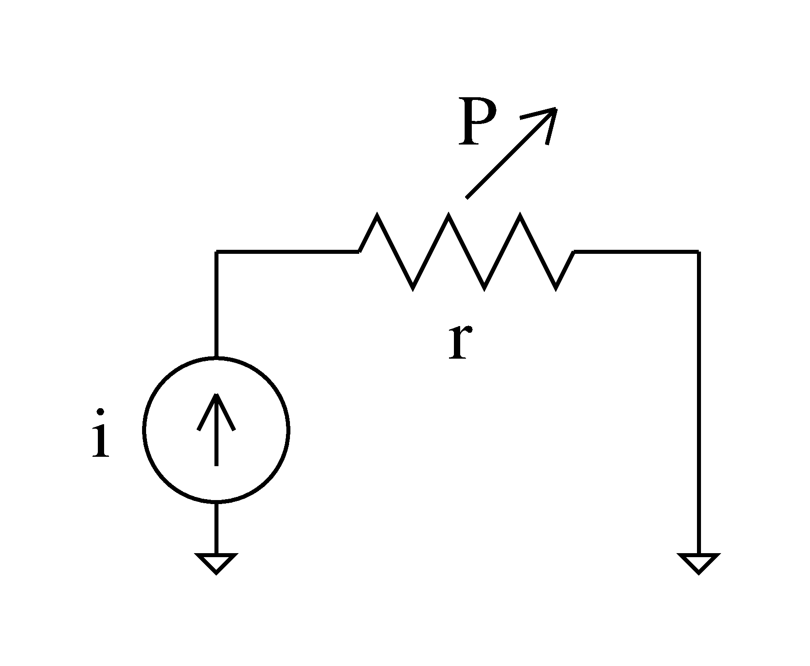
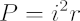
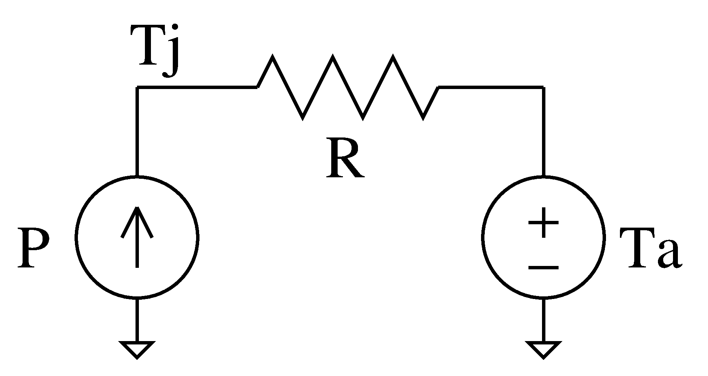
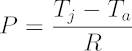
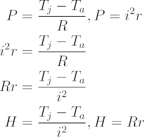
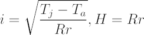
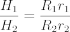
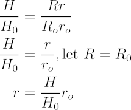
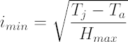
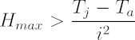

The thermal performance of an electrical connector can be evaluated by measuring the ambient temperature, the temperature at the contact or junction, and the current flowing though the connector under steady-state conditions. This relationship allows direct performance comparisons between connectors and quantification of performance degradation over time. The relationship's simple computation requirements makes it suitable for embedded systems. Evaluation of thermal performance is particularly applicable in power delivery applications where the connector is thermally limited, such as in electric vehicle charging.
Power connectors degrade over time and eventually require replacement. As a connector degrades, its contact resistance rises and causes more heat to be produced as current flows through it. Eventually, the temperature of the connector may become so high that no additional current can flow through it without exceeding the connector's rated temperature. In the case where maximum power delivery is demanded, the maximum possible current is set by the maximum rated temperature and by the thermal performance of the connector. In light of this, we are interested in a method to evaluate a connector's electro-thermal performance to improve power delivery.
Connector degradation in the form of rising contact resistance is caused by a combination of chemical corrosion, mechanical deformation, or physical debris. The ambient environment, mating action (fretting), application of high power, and sloppy manufacturing create these causes. Connector ailments accumulate and exacerbate each other to the point where the connector's performance is no longer considered within specification, prompting replacement.
In implementations where a connector is thermally-limited, a thermal sensor monitors the connector and informs a power controller of how much current to deliver to maintain a safe connector temperature. With an additional ambient temperature sensor, the connector's thermal performance be readily evaluated.
For these models, we assume that we can easily measure temperatures and currents but not thermal or electrical resistance. Realizations of embedded systems governing high power connectors have sensors to the parameters that are measurable in the assumption.
The connector's electrical side is modeled as a current source providing current through its contact as a resistance.

Electrical Model
The connector's thermal side is modeled as a power source providing heat through the connector's thermal resistance to the ambient environment, a temperature source. The power source delivers the same power dissipated by the electrical resistance in the previously described model.

Thermal Model
Combining these two models, we can isolate the contact resistance from known variables.

As we observe, the contact resistance cannot be totally isolated, because we do not know the thermal resistance. The contact resistance can be isolated, if the thermal resistance is also measured. However, the comparison of connectors does not require complete knowledge of the contact resistance. Instead, we can use a combination of thermal and electrical resistance together as a "heating factor" H for comparisons. The heating factor has units ΩK/W, or equivalently Ω°C/W.
A caveat of this model is that it does not take into account thermal or electrical capacitances. In typical systems, the junction temperature would lag behind the application of current, preventing the use of this model during transient events. In practical application, a time average or aggressive low pass filtering of the temperatures and currents is used to approximate steady state conditions.
The heating factor allows us to compare the thermal performance of connectors to each other. Connectors with a higher heating factor are less capable at delivering current, and thus power, than connectors with a lower heating factor.
Intuitively, a higher heating factor means that a connector less capable at delivering current due to either high thermal or electrical resistance.

Connectors with a lower heating factor are more capable at delivering current than connectors with lower heating factors. In this way, connector performance may be quantified against a known reference connector for relative performance.

Similar connectors are connectors that have the same thermal resistance R. For evaluating a connector's degradation over time or under difference conditions, we can assume similar thermal resistances, too. A degraded connector's heating factor can be compared to the heating factor of a pristine connector to obtain its contact resistance.

A connector's performance may be specified with a minimum deliverable current at a certain ambient temperature and a maximum temperature for the handle assembly at the contacts or junction (typically determined by assembly material or human handling limits). This style of specification allows us to calculate a heating factor that can be used to create derating curves for that connector. In this use case, the following equation defines the minimum current that a given connector with a maximum heating factor H is capable of.

The following derating curves are for three hypothetical connectors with a maximum junction temperature of 75 °C. The three curves are for the connectors which were capable of delivering different currents while being thermally limited to 75 °C with the ambient temperature at 27 °C. The three curves are defined by three different heating factors.
Connectors can be evaluated using the heating factor relationship. However, using the previously described derating curves within an embedded system is not computationally efficient because the defining relationship includes a difficult-to-compute square root. Thankfully, evaluation with current is not necessary, even though the derating curves derate in terms of current, . When the heating factor is computed from a connector's maximum ratings, that heating factor should be the maximum value of what can be measured from a connector within specification. A connector can be considered to be out of specification, if its heating factor exceeds the maximum rated heating factor.

The following is example code in C to compute the heating factor. Note that the computation can be easily ported to use a fixed point math library.
#define MIN_ISQUARED 1
bool heatingfactor(double junctionTemp, double ambientTemp, double current,
double* result) {
double iSquared = current * current;
if(iSquared <= MIN_ISQUARED)
return false;
*result = (junctionTemp - ambientTemp) / iSquared;
return true;
}
Specification testing with the heating factor is easy to implement on an embedded system attached to a connector, since the computation involves only simple arithmetic. The big edge case to handle is where the connector current tends to zero and creates an infinite heating factor. After the system computes a heating factor, that factor can then be compared with the rated maximum heating factor to trigger action.
Written on the 10th of July in 2018.
{kind=link}
{kind=link}
{kind=link}
{kind=link}